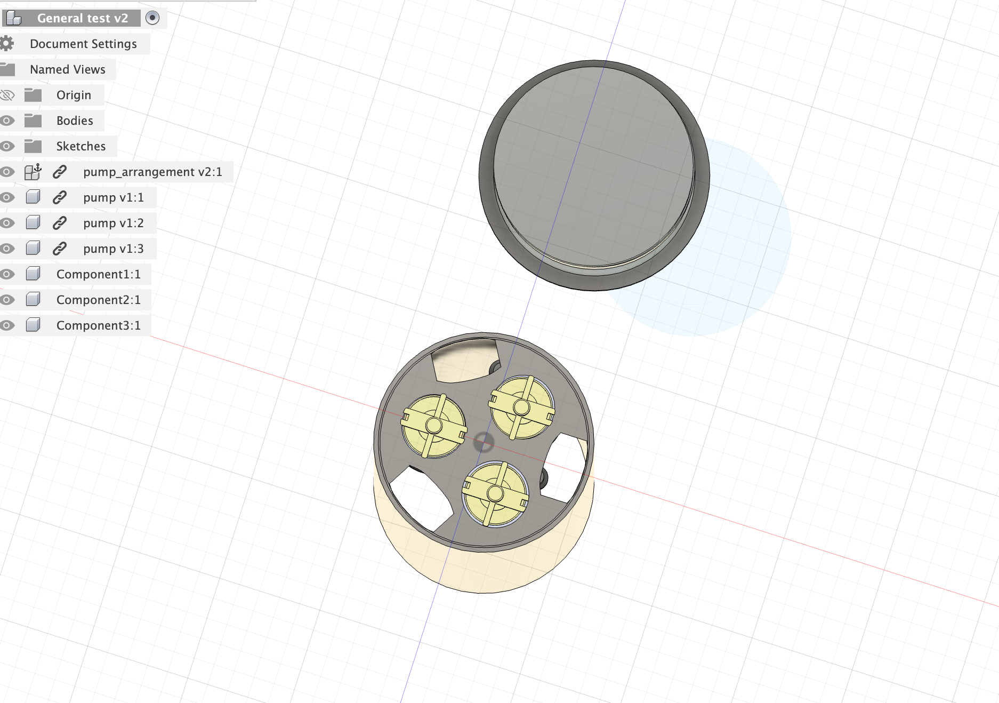
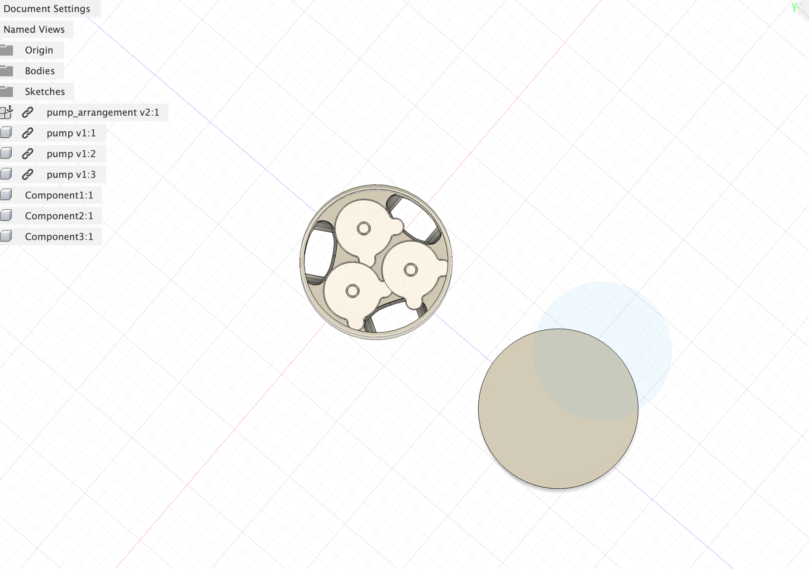

Week 9 Team Updates
Housing
Started to create a 3d model of the whole sensor to test its boyuconcy on Fusion.
 Additionally, added masses and altered the volumes to fit the measurements made in class, along with the material types of each. Currently working on the simulation part - found center of mass and center of gravity - currently figuring out how to model the actual buoyancy and simulate in fusion
Salinity (new)
Gathered data on Friday comparing resistance to known salinity, but upon comparison to older data from materials tests realized the standard deviations & values were off. I am reasonably certain it has to do with the code. I don't think Friday's data is terrible, but if there is time, redoing the test with the new code might be beneficial in having a more accurate salinity/resistance map.
New Salinity Code:
int voltPin = 32; int dtime = 250; int raw = 0; float Vin = 3.3; float Vout = 0; float R1 = 1000; float R2 = 0; float buff = 0; float avg = 0; int samples = 5000; int outputPinBlue = 23; int outputPinRed = 33; void setup(){ pinMode(outputPinRed,OUTPUT); pinMode(outputPinBlue,OUTPUT); pinMode(voltPin, INPUT); Serial.begin(115200); // start serial } void loop() { float tot = 0; for (int i = 0; i < samples; i++) { // --- Phase 1: +V --- digitalWrite(outputPinBlue, HIGH); digitalWrite(outputPinRed, LOW); delayMicroseconds(dtime); int rawPos = analogRead(voltPin); // read in middle of +V phase delayMicroseconds(dtime); // --- Phase 2: -V --- digitalWrite(outputPinBlue, LOW); digitalWrite(outputPinRed, HIGH); delayMicroseconds(dtime); int rawNeg = analogRead(voltPin); // read in middle of -V phase delayMicroseconds(dtime); // Convert raw readings to resistance float rawAvg = (rawPos + rawNeg) / 2.0; float Vout = (rawAvg * Vin) / 4096.0; float R2 = R1 * ((Vin / Vout) - 1.0); tot += R2; } avg = tot / samples; Serial.print(avg); Serial.println(" Ohms"); }
Salinity
Tested resistance vs. known salinity of a fluid using a microwave to heat the water and dissolve the salts better. Discovered issues with water leaking into the experimental setup, which might've thrown off our data. Planning to run additional tests with more waterproofing.
Currently using temporary code that sends current in one direction. New code that reads more samples and sends alternating current is a next step.
Code:
const int voltPin = 32; const int outputPinRed = 33; const int outputPinBlue = 23; double deltaV; const int R2 = 1000; const double totalVoltage = 3.3; void setup() { pinMode(voltPin, INPUT); pinMode(outputPinRed, OUTPUT); pinMode(outputPinBlue, OUTPUT); Serial.begin(115200); } void loop() { // Alternating current digitalWrite(outputPinRed, HIGH); digitalWrite(outputPinBlue, LOW); // Find current using voltage drop across R2 deltaV = analogRead(voltPin); deltaV *= 3.3; deltaV /= 4096.0; Serial.println(deltaV); double current = deltaV / R2; // Find R1 double remainingVoltage = totalVoltage - deltaV; double R1 = remainingVoltage / current; Serial.printf("R1 is %f\n", R1); // wait delay(1000); }
Depth Sensor Comparison
| Sensor | Cost | Claimed Depth Range | Measured Depth Range | Claimed Accuracy | Measured Accuracy | Product Link |
|---|---|---|---|---|---|---|
| JSN-SR04T | $9 | ~0.25–4 m (per listing) | TBD | ~5 mm resolution (per listing) | TBD | Product link |
| "Superior" Underwater Distance Sensor | $36 | Up to ~6 m (per listing) | TBD | Within 2 m: ±(0.5 + D×0.5%); beyond 2 m: ±(1 + D×1%) (per listing) | TBD | Product link |
| TL‑136 | $40 | 0-3 m | TBD | ±1–3 cm | TBD | Product link |